Implementation¶
QCD Coupling¶
The value of the QCD coupling at scale 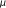 is specified by the evolution equation,
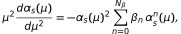
and an initial value 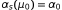.
In qcdevol, for the 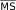 scheme; the coefficients
are given by qcdevol.BETA_MSB(nf).
While it is possible
to integrate the evolution equation directly (see Alpha_s.exact()),
a faster method is based upon an expansion of
the equivalent integrals,
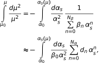
where
and 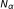 is chosen large enough to give the desired
accuracy. (By default 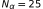 in qcdevol which is more
than adequate for most purposes.) Evaluating the integrals and rearranging
gives an equation,

that determines implicitly. This equation can be solved for , for example, by using a root-finding algorithm like the secant method; typically only a few iterations are required.
The radius of convergence for the expansion of the inverse beta function is easily calculated. In the scheme with 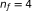, it is , which is much larger than what is usually needed.
This approach to calculating the evolution can be efficiently implemented directly
in Python,
without resort to underlying code in C or Cython. This is useful for error
propagation because it means that any of the parameters can be assigned an
uncertainty (using the gvar module).
QCD couplings are defined to include a specific number of quarks in the vacuum polarization. It is possible using perturbation theory to remove a heavy quark, with mass 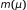, from a coupling to obtain a new coupling with flavors:
where the depend upon , , and , and 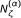. The same equation can be used to add a quark flavor by solving for 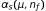 numerically; adding a quark is then the exact inverse of removing a quark.
Quark Mass¶
The evolution of the mass is specified by
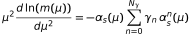
with initial condition 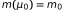. In qcdevol, 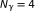;
the coefficients 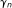 are given by qcdevol.GAMMA_MSB(nf).
This equation also can be written as an integral
where
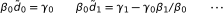
and again is chosen large enough to give the desired accuracy (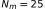 by default). Integrating, we get a closed-form result for in terms of and 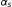:
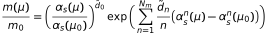
This is very fast to evaluate given values for the coupling.
Heavy quarks can be removed or added to the vacuum polarization assumed in , analogously to the coupling.
Power Series¶
Calculating parameters like the 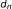 above (and manipulating perturbation
series more generally) is done using the
gvar.powerseries module:
https://gvar.readthedocs.io/en/latest/gvar_other.html?highlight=powerseries#module-gvar.powerseries